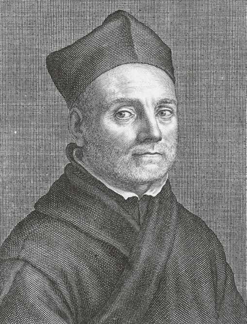
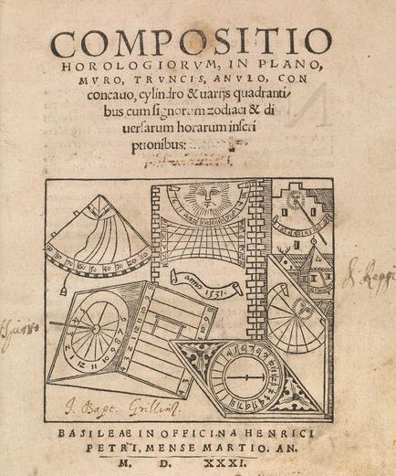
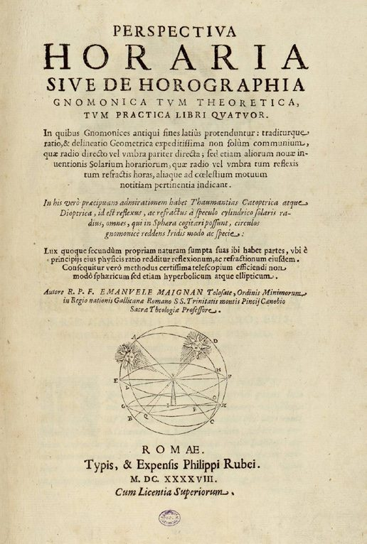
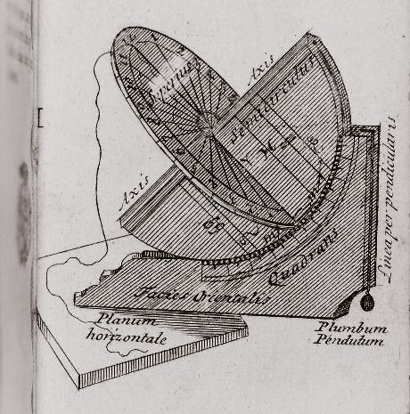
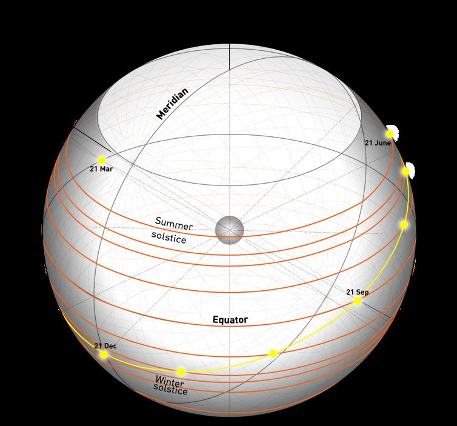
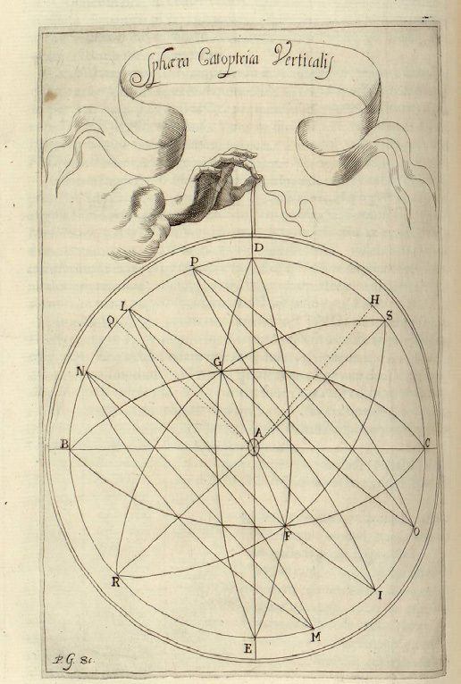
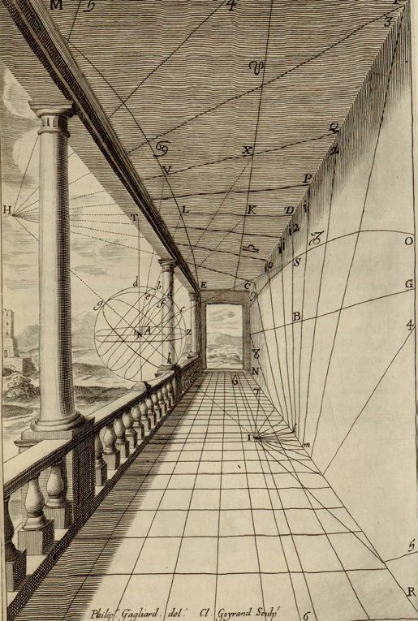
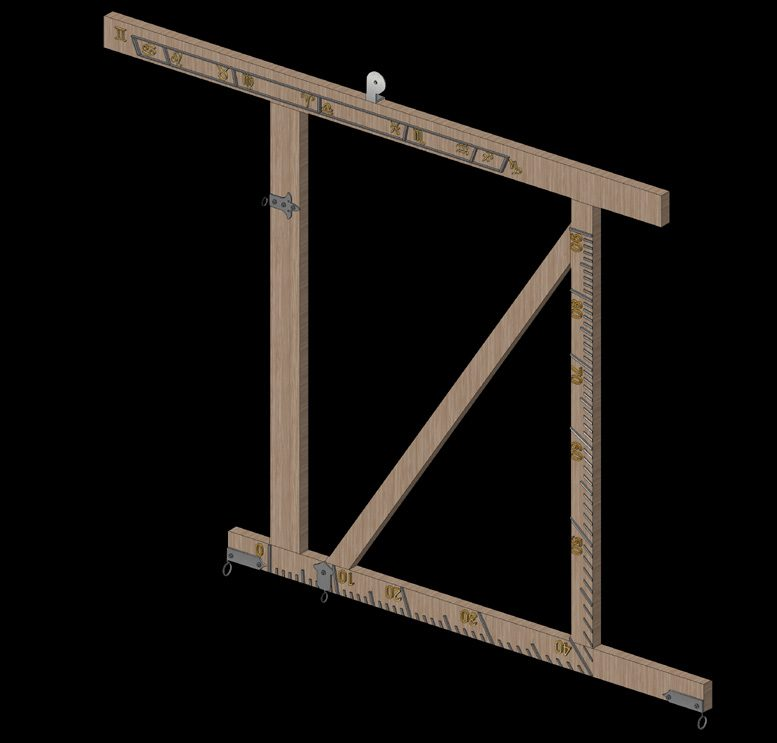

1635Kircher, Primitiae gnomonicae catoptricae.
1648Maignan, Perspectiva horaria — one edition only.
1687Pardiès, Deux machines propres à faire les quadrans.
Catoptric sphereA celestial sphere seen in a central mirror — the reversed sky that a reflected dial actually draws.
Chapter I · 3–4
The 17th-Century Treatises
Kircher gave the theory, Pardiès the machine, and Maignan the method this thesis still uses: project an ideal sphere, then its mirror image.
Bonfa's dial was designed in 1673. Three works on reflected sundials were then circulating in Grenoble, and the thesis reads each as a plausible influence.
iKircher — the first idea of catoptric


Athanasius Kircher (1602–1680), German Jesuit and author of some forty works, gathered his gnomonics into the Primitiae Gnomonicae Catoptricae (Avignon, 1635) and Ars Magna Lucis et Umbrae (Rome, 1646). He is generally credited as the pioneer of the reflected dial. He set out the reflection laws as “theorems” — angle of incidence, angle of reflection, the image inverted left-for-right and top-for-bottom — and combined perspective, gnomonics, geography, optics and conic sections into one approach. Bonfa taught at Avignon, where he may well have known Kircher's work directly.
iiMaignan — the practical treatise

Emmanuel Maignan (1601–1676), a self-taught mathematician of the Order of Minims from Toulouse, spent fourteen years at Santissima Trinità dei Monti in Rome and there wrote Perspectiva horaria sive de horographia gnomonica tum theoretica tum practica (Rome, 1648). Nominally about sundials, it is also a complete treatise on projective geometry, perspective and optics — 21 worked experiments, in four books:
- the classical theory;
- practice and illustration of ordinary dials;
- Catoptrice Horaria — projecting the celestial sphere onto concave, spherical, parabolic, convex and cylindrical mirrors;
- Dioptrice Horaria — refraction, and on to the refracting telescope.
It survives in a single edition and is, uniquely among comparable works, genuinely applicable. Its detailed plates let a later reader reconstruct the constructions — which is exactly what this thesis does.
iiiPardiès — the machine

Ignace-Gaston Pardiès (1636–1673), French Jesuit and an early proponent of the wave theory of light, published Deux machines propres à faire les quadrans (Paris, 1687). Its chapter VI, “Horologium reflexionis in cubiculo facere” — “making a reflection clock in a room” — reads: “A small mirror is placed over the window, which receives sunlight and reflects a ray into the room, so that this ray changes position as the Sun advances. Mark all the painted hours in the chamber…” Less theoretical than Kircher, less architectural than Maignan, but a one-of-a-kind reference for anyone using the law of reflection to build a dial.
ivMaignan's lesson: the ideal sphere and its mirror
The method the thesis borrows has three ideas.
1 · The celestial sphere

An imaginary sphere around the Earth carrying every celestial body. Because the Earth's radius is negligible against those distances, the Earth sits at its centre. It turns about the polar axis; by analogy with Earth it has an equator (0° declination, poles at ±90°), a horizon and zenith for the observer, a local meridian, and the ecliptic — the plane of Earth's orbit, tilted so the Sun runs from +23°27′ at the summer solstice to −23°27′ at the winter solstice, crossing 0° at the equinoxes. Correlating the sphere with the observer's latitude gives the local celestial sphere Maignan actually builds on.
2 · Projecting the sphere

From sections XI–XXI of his book (pages 34–58) Maignan projects the sphere and its circles onto the plane, and then onto the curved arches of real interiors — showing the observer placing his eye on the projection of the Sun's rays.
3 · The catoptric sphere

Maignan's personal invention: a mirrored celestial sphere. Put a mirror at the centre of an ordinary celestial sphere and the reflection produces a second, reversed sphere. On page 283 he draws it — segment OB halves the sphere; the mirror is the ellipse VX; the reflected cone of sunlight forms a fresh image of the sky on the surface it strikes. Read against perspective, the two suns are simply the bases of two visual cones. Projecting this catoptric sphere onto any surface is the reflected dial — and it is the tool used later to analyse Grenoble.

To trace the lines, Maignan built instruments — the Verticale mobile and Meridiano mobile — for laying down celestial coordinates, then the astronomical, Italic and Babylonian hour systems, and finally the astrological houses aligned on the north–south line.